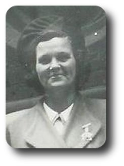
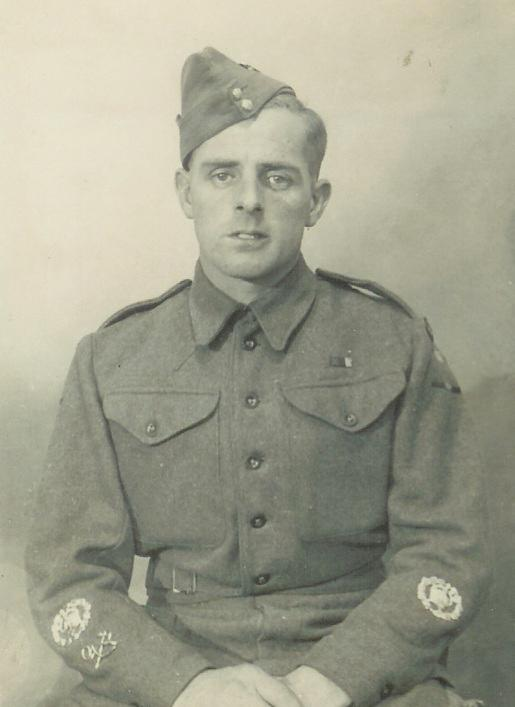
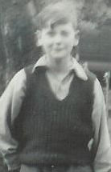
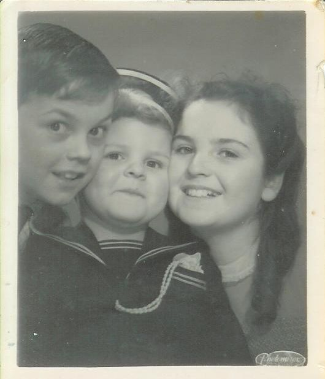

Violet May Pallant ( 1908
- 1979 )


Daughter of
Alice Elizabeth Latham (who was born
around 1880 in England) and Edward Pallant (who was born around 1876 in
England) and who were married on 1905.09.02 in Epsom, Surrey.
1908.04.14 Violet was born in Springfield, Wandsworth, London, England
( Jun 1908, Wandsworth, v.1d, pg.726 )
| REGISTRATION DISTRICT Wandsworth |
|
1908 BIRTH in the Sub-district of Springfield in the County of London
|
| When and Where Born |
Name if any |
Sex |
Father |
Mother |
Occupation of Father |
Informant |
When registered |
| Fourteenth April 1908, 77 Swaffield Road |
Violet |
Girl |
Edward Pallant |
Alice Elizabeth Pallant formerly Latham, of 34 Red Lion Street Wandsworth
|
General labourer |
A.E. Pallant Mother 77 Swaffield Road, Wandsworth |
Twenty Fourth April 1908 |
1909.09.13 Violet's mother died in the Union Infirmary, St. Johns Hill,
London, England
1911.04.02 census: Brook Cottage, The Swale, Benhall, Saxmundham, Aldeburgh,
Plomesgate, Suffolk
|
1911 England Census : Brook Cottage, The Swale, Benhall, Saxmundham (5
rooms)
|
| Name |
Relation |
Condition/
Yrs married
|
Age in 1911 |
Birth Year |
Occupation |
Where Born |
| Mary Ann Hill |
Head |
Widow |
37 |
1874 |
-- |
Suffolk Bloxhall |
| William Hill |
Son |
-- |
14 |
1897 |
Farm Labourer |
Suffolk Snape |
| Louisa Hill |
Daughter |
-- |
13 |
1898 |
-- |
Suffolk Shen |
| Rosa Hill |
Daughter |
-- |
11 |
1900 |
School |
Suffolk Sudbourne |
| Percy Hill |
Son |
-- |
9 |
1902 |
-- |
Suffolk Sudbourne |
| Violet Hill |
Daughter |
-- |
8 |
1903 |
-- |
Suffolk Oxford |
| Agnes Hill |
Daughter |
-- |
6 |
1905 |
-- |
Suffolk Oxford |
| Doris Hill |
Daughter |
-- |
1 |
1910 |
-- |
Suffolk Snape |
| Thomas Gooding |
Brother |
Single |
27 |
1884 |
Farm Labourer |
Suffolk Oxford |
Edward Pallant |
Boarder |
Widower |
34 |
1877 |
Malsters Labourer (Malting) |
Suffolk Farnham |
| Violet Pallant |
Boarder |
-- |
3 |
1908 |
-- |
Wandsworth Infirmary |
| William Pallant |
Boarder |
-- |
1 |
1910 |
-- |
Kings College Hospital London |
1911 Violet's father married Mrs. Mary A. Hill (formerly Mary Ann E. Gooding)
1913.03.13 Violet's half-brother Edward Latham (8) emigrated to Canada
1913.09.25 Violet's half-sister Alice Latham (13) emigrated to Canada.
1933 Violet was involved with:
Stanley Robert Long
(Window Cleaner)
Could this be Stanley?: ( Births Apr-May-Jun 1907, Long, Stanley Robert,
Croydon, v. 2a, pg.381 )
1938.06.06 Violet was married in Croydon, England
( 2nd qtr. 1938, Croydon, v.2a, pg.1870 ) to:
|
1938. Marriage solemnized at The Register Office in the District of
Croydon in the County Borough of Croydon
|
| When Married |
Name and Surname |
Age |
Condition |
Profession |
Residence |
Father's Name |
Profession of Father |
| Sixth June 1938 |
Eric Clifford Copus |
26 |
Bachelor |
Motor engineer (journeyman) |
465 Brighton Road, Croydon |
Clarence Copus (deceased) |
Clerical Officer (Board of Trade) |
| Violet May Pallant |
29 |
Spinster |
-- |
465 Brighton Road, Croydon |
Edward Pallant |
Builder's Labourer |
|
Married in the Register Office by Certificate before me,
|
Philip J. Stevens
Registrar
Arthur Thorn
Duputy Supt.
Registrar
|
|
This Marriage was solemnized between us
|
E.Copus |
in the Presence of us |
L.Underwood |
| V.Pallant |
W.F.J.Carter |
Eric Clifford Copus

Eric Copus (1944)
1912.03 born Wandsworth, England
( unconfirmed: Mar 1912, Wandsworth, v.1d, pg.1276, mother: Finding )
1979 Violet died in Sussex, England
Violet's children:
-
Ronald Leonard Long
-->>

Ron Long
Ronald is married to Margaret A. Lindfield
-

To Auntie Alice, from Keith, Graham, Brenda.
Brenda D. Copus
-->>
 [card]
[card]
-
Roy Graham Copus
-
Keith Allan Copus
Keith is married to Heather Marie Burns
More pictures for this bunch (I hope). If these are your baby pictures, sorry
about that - I'm hoping they'll help someone make a connection. Please get in
touch.
-
[card 1960],
[card]
-
Ron ?, 1944, "This was taken
indoors but I don't know what is the matter but, I look to serious.
Compare it with the little one taken at school. 1944"
-
Violet and Ronnie,
"This photo of Ronnie and myself, Ronnie is crying he didn't want to be
taken. I have got my teeth out in the photo xx"
-
Ron Long, "not very good of Ron, the sun
was in his eyes I think"
-
Violet, Eric, Baby Keith, Sept. 1946
-
Violet, "My
husband, baby and myself in the garden"
-
Brenda, "Brenda and her Dad,
1945"
-
Graham, "Graham in the park on his trycle,
1945"
-
"Little Keith, To Auntie Alice, 4 yrs 5
months"
-
"Graham, Keith with scooter"
-
"Brenda, 16 years old on the 14th
December
{kind=link}
![[card]](images/brenda-christmas-card.jpg){kind=link}
![[card 1960]](images/long-ron-1960-christmas-card.jpg){kind=link}
![[card]](images/long-ron-christmas-card.jpg){kind=link}
{kind=link}
{kind=link}
{kind=link}
{kind=link}
{kind=link}
{kind=link}
{kind=link}
{kind=link}
{kind=link}
{kind=link}